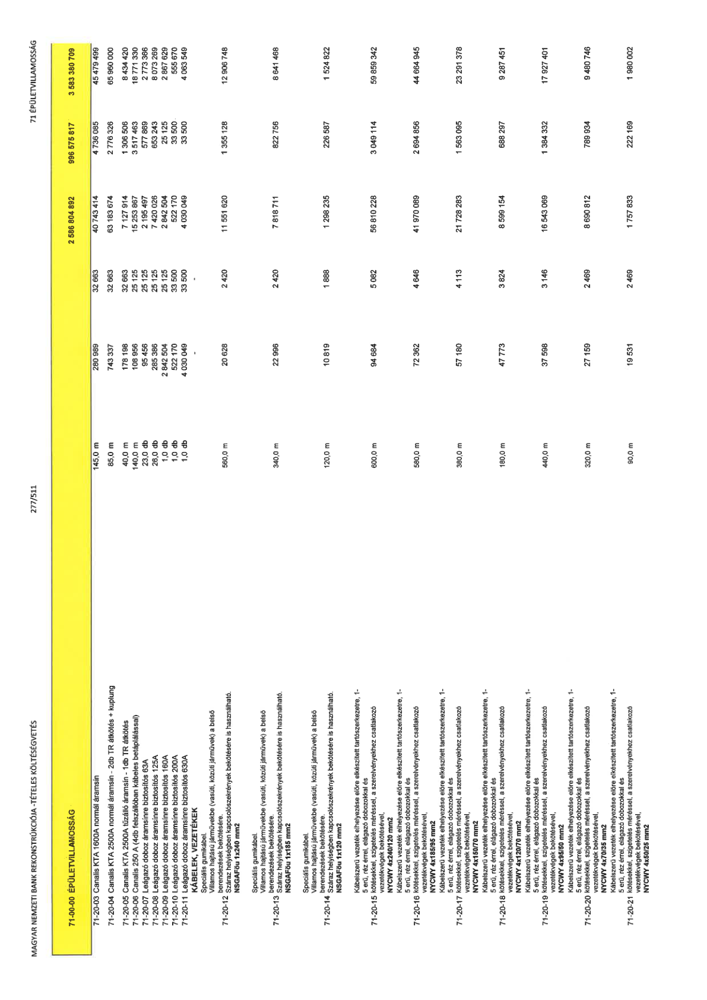

| Tétel | Menny. | Egys. | Anyag e.ár (net HUF) | Díj e.ár (net HUF) | Anyag összesen (net HUF) | Díj összesen (net HUF) | Anyag+Díj összesen (net HUF) |
|---|---|---|---|---|---|---|---|
| 71-00-00 ÉPÜLETVILLAMOSSÁG | NaN | NaN | 0 | 0 | 2 586 804 892 | 996 575 817 | 3 583 380 709 |
| 71-20-03 Canalis KTA 1600A normál áramsín | 145,0 | m | 280 989 | 32 663 | 40 743 414 | 4 736 085 | 45 479 499 |
| 71-20-04 Canalis KTA 2500A normál áramsín - 2db TR átkötés + kuplung | 85,0 | m | 743 337 | 32 663 | 63 183 674 | 2 776 326 | 65 960 000 |
| 71-20-05 Canalis KTA 2500A tűzálló áramsín - 1db TR átkötés | 40,0 | m | 178 198 | 32 663 | 7 127 914 | 1 306 506 | 8 434 420 |
| 71-20-06 Canalis 250 A (4db felszállóban kábeles betáplálással) | 140,0 | m | 108 956 | 25 125 | 15 253 867 | 3 517 463 | 18 771 330 |
| 71-20-07 Leágazó doboz áramsínre biztosítós 63A | 23,0 | db | 95 456 | 25 125 | 2 195 497 | 577 869 | 2 773 366 |
| 71-20-08 Leágazó doboz áramsínre biztosítós 125A | 26,0 | db | 285 386 | 25 125 | 7 420 026 | 653 243 | 8 073 269 |
| 71-20-09 Leágazó doboz áramsínre biztosítós 160A | 1,0 | db | 2 842 504 | 25 125 | 2 842 504 | 25 125 | 2 867 629 |
| 71-20-10 Leágazó doboz áramsínre biztosítós 200A | 1,0 | db | 522 170 | 33 500 | 522 170 | 33 500 | 555 670 |
| 71-20-11 Leágazó doboz áramsínre biztosítós 630A | 1,0 | db | 4 030 049 | 33 500 | 4 030 049 | 33 500 | 4 063 549 |
| KÁBELEK, VEZETÉKEK Speciális gumikábel. Villamos hajtású járművekbe (vasúti, közúti járművek) a belső berendezések bekötésére. Száraz helyiségekben kapcsolószekrények bekötésére is használható. NSGAFöu 1x240 mm2 | 0 | 0 | 0 | 0 | 0 | 0 | 0 |
| 71-20-12 | 560,0 | m | 20 628 | 2 420 | 11 551 620 | 1 355 128 | 12 906 748 |
| Speciális gumikábel. Villamos hajtású járművekbe (vasúti, közúti járművek) a belső berendezések bekötésére. Száraz helyiségekben kapcsolószekrények bekötésére is használható. NSGAFöu 1x185 mm2 | 0 | 0 | 0 | 0 | 0 | 0 | 0 |
| 71-20-13 | 340,0 | m | 22 986 | 2 420 | 7 818 711 | 822 756 | 8 641 468 |
| Speciális gumikábel. Villamos hajtású járművekbe (vasúti, közúti járművek) a belső berendezések bekötésére. Száraz helyiségekben kapcsolószekrények bekötésére is használható. NSGAFöu 1x120 mm2 | 0 | 0 | 0 | 0 | 0 | 0 | 0 |
| 71-20-14 | 120,0 | m | 10 819 | 1 888 | 1 298 235 | 226 587 | 1 524 822 |
| Kábelszerű vezeték elhelyezése előre elkészített tartószerkezetre, 1- 5 erű, réz érrel, elágazó dobozokkal és kötésekkel, szigetelés méréssel, a szerelvényekhez csatlakozó vezetékvégek bekötésével, NYCWY 4x240/120 mm2 | 0 | 0 | 0 | 0 | 0 | 0 | 0 |
| 71-20-15 | 600,0 | m | 94 684 | 5 082 | 56 810 228 | 3 049 114 | 59 859 342 |
| Kábelszerű vezeték elhelyezése előre elkészített tartószerkezetre, 1- 5 erű, réz érrel, elágazó dobozokkal és kötésekkel, szigetelés méréssel, a szerelvényekhez csatlakozó vezetékvégek bekötésével, NYCWY 4x185/95 mm2 | 0 | 0 | 0 | 0 | 0 | 0 | 0 |
| 71-20-16 | 580,0 | m | 72 362 | 4 646 | 41 970 089 | 2 694 856 | 44 664 945 |
| Kábelszerű vezeték elhelyezése előre elkészített tartószerkezetre, 1- 5 erű, réz érrel, elágazó dobozokkal és kötésekkel, szigetelés méréssel, a szerelvényekhez csatlakozó vezetékvégek bekötésével, NYCWY 4x150/70 mm2 | 0 | 0 | 0 | 0 | 0 | 0 | 0 |
| 71-20-17 | 380,0 | m | 57 180 | 4 113 | 21 728 283 | 1 563 095 | 23 291 378 |
| Kábelszerű vezeték elhelyezése előre elkészített tartószerkezetre, 1- 5 erű, réz érrel, elágazó dobozokkal és kötésekkel, szigetelés méréssel, a szerelvényekhez csatlakozó vezetékvégek bekötésével, NYCWY 4x120/70 mm2 | 0 | 0 | 0 | 0 | 0 | 0 | 0 |
| 71-20-18 | 180,0 | m | 47 773 | 3 824 | 8 599 154 | 688 297 | 9 287 451 |
| Kábelszerű vezeték elhelyezése előre elkészített tartószerkezetre, 1- 5 erű, réz érrel, elágazó dobozokkal és kötésekkel, szigetelés méréssel, a szerelvényekhez csatlakozó vezetékvégek bekötésével, NYCWY 4x95/50 mm2 | 0 | 0 | 0 | 0 | 0 | 0 | 0 |
| 71-20-19 | 440,0 | m | 37 598 | 3 146 | 16 543 069 | 1 384 332 | 17 927 401 |
| Kábelszerű vezeték elhelyezése előre elkészített tartószerkezetre, 1- 5 erű, réz érrel, elágazó dobozokkal és kötésekkel, szigetelés méréssel, a szerelvényekhez csatlakozó vezetékvégek bekötésével, NYCWY 4x70/35 mm2 | 0 | 0 | 0 | 0 | 0 | 0 | 0 |
| 71-20-20 | 320,0 | m | 27 159 | 2 469 | 8 690 812 | 789 934 | 9 480 746 |
| Kábelszerű vezeték elhelyezése előre elkészített tartószerkezetre, 1- 5 erű, réz érrel, elágazó dobozokkal és kötésekkel, szigetelés méréssel, a szerelvényekhez csatlakozó vezetékvégek bekötésével, NYCWY 4x50/25 mm2 | 0 | 0 | 0 | 0 | 0 | 0 | 0 |
| 71-20-21 | 90,0 | m | 19 531 | 2 469 | 1 757 833 | 222 169 | 1 980 002 |
